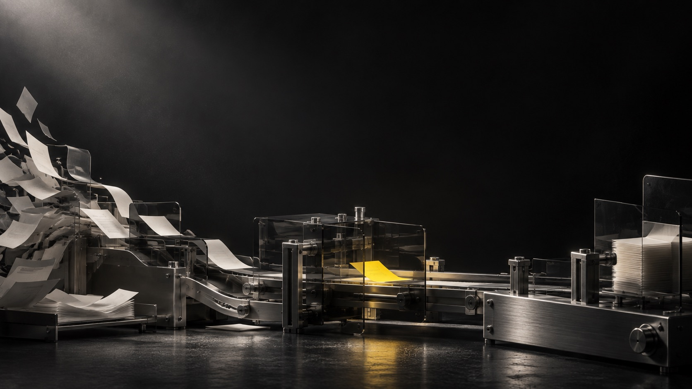

Incoming requests
Capture the right details, route the work, and make ownership visible from the start.

Workflow automation for service businesses
Turn scattered requests, follow-ups, and approvals into workflows your team can see and trust.
We find the repeated handoff that slows everything else down, then make its next action visible.
Capture the right details, route the work, and make ownership visible from the start.
Keep quotes, callbacks, and unanswered questions moving without relying on someone to remember.
Check what arrived, flag what is missing, and send it to the person who can decide.
Start small enough to understand the exceptions. Test with the people who will use it.
Map the work
Show us where a request starts, who touches it, and where it tends to stall.
Choose the outcome
We agree on the inputs, exceptions, and the parts your team should still handle.
Build for reality
We connect the tools, check edge cases, and keep the next action visible.
Hand over control
You get a clear explanation of the workflow and what to do when it needs attention.
A useful system makes these answers easy to find.
1 / 3
Clear answers before a project starts.
We start with what you already use. If a connection is unreliable, we account for that before building.
AI can read a document or prepare a draft. People still review messages and decisions that require judgment.
After we understand one workflow, you receive a clear scope and quote. Third-party fees are listed separately.
We explain how the workflow runs and where to spot problems. Ongoing changes can be scoped separately.
An example of a request that got lost is enough to begin.